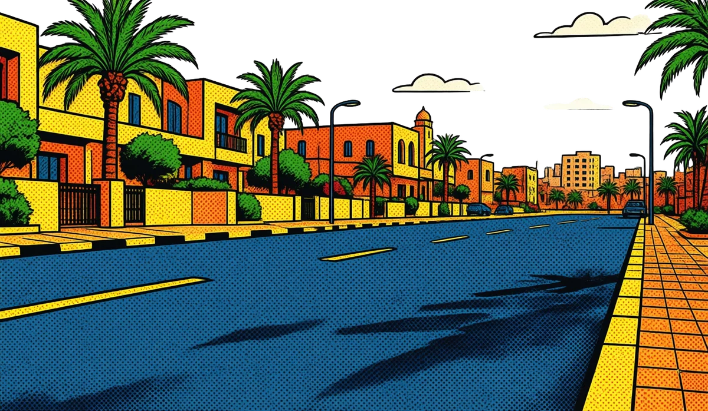

سيارة مسكرة عليك
تبي تطلع، وصاحبها مش موجود.
دورني يوصّل التنبيه بسرعة ويحافظ على خصوصية الطرفين. امسح الرمز، اختار السبب، وأرسل.
شوف كيف يعمل
تبي تطلع، وصاحبها مش موجود.
المدخل مسكّر، ومش عارف تنادي من.
سيارة تمنع التحميل أو التنزيل.
أنوار شغالة، نافذة مفتوحة، أو مشكلة ظاهرة.
المشكلة مش إنك شفت السيارة.
المشكلة: كيف توصل لصاحبها؟
هنا يجي دورني. بطاقة على السيارة تفتح لك طريق التنبيه، بدون ما تعرف رقم صاحبها.
امسح الرمز، اختار السبب، وأرسل التنبيه.
افتح كاميرا هاتفك وامسح رمز دورني الموجود على السيارة.
حدد المشكلة من قائمة واضحة، بدون كتابة أو مشاركة بيانات.
يُسجّل البلاغ ويقدر صاحب السيارة يراجعه ويردّ من حسابه.
مُرسل التنبيه يوضّح الموقف، وصاحب المركبة يراجع الحالة ويردّ من حسابه.
من الردود المتاحة: «أنا في الطريق»، «تم حل الموضوع»، أو «لا أستطيع الوصول». تابع الردّ من صفحة الحالة؛ تسجيل البلاغ وحده مش تأكيد إن المالك شافه.
جرّبها بنفسك
استكشف تجربة مُرسل التنبيه، من أول مسح للبطاقة إلى متابعة الردّ وطلب الدعم.
افتح كاميرا هاتفك وامسح رمز دورني على السيارة. الرابط يفتح صفحة الإبلاغ، بدون تنزيل تطبيق للمبلّغ.
امسح رمز بطاقتي
رسم للشرح، مش رمز قابل للمسحبدل شرح طويل، حدد نوع المشكلة. صاحب السيارة يراجع البلاغ من حسابه ويردّ عليك من خلال دورني.
رقم المالك وبريده ما يظهروا لك في صفحة المسح.
احتفظ بصفحة متابعة البلاغ وشوف ردّ المالك. تسجيل البلاغ ما يعنيش بالضرورة إنه قرأه أو وصل للسيارة.
لو المالك ردّ «لا أستطيع الوصول»، يتاح التصعيد للدعم مباشرة. وفي حالة عدم الرد، يظهر الخيار حسب إعدادات المنظومة.
جرّب ردّ صاحب السيارة:
عند التصعيد، يصل البلاغ لفريق الدعم مرتبطاً بالبطاقة والسيارة وصاحبها. تتابع الردود من صفحة الحالة، بدون إعادة شرح كل شيء.
وإذا استمر عدم الرد وظهر خيار الاتصال، تفتح صفحة أرقام مركز الدعم المعتمدة من الإدارة.
الاتصال هنا بمركز الدعم، مش مكالمة آلية لصاحب السيارة.
دعم دورني
هكذا تنتقل الحالة للدعم في التطبيق. لم تُنشأ تذكرة حقيقية في هذه المحاكاة.
رقم صاحب المركبة وبريده ما يظهروا في صفحة المسح. التنبيه والردّ يمرّوا من خلال دورني، بدون تبادل مباشر لأرقام الهاتف.
بطاقة تربط سيارتك بوسيلة تنبيه، بدل ما تخلّي رقمك على الزجاج.
الطلبات والاستفسارات نستقبلوها بالبريد. ما فيش دفع أو تأكيد شراء داخل الصفحة.
اطلب بطاقتك بالبريد يفتح تطبيق البريد؛ راجع الرسالة واضغط إرسال هناك.تحتاج بطاقات لموظفيك أو لمركبات الشركة؟ خلّينا نعرف احتياجك، ونناقش معاك توزيع البطاقات أو تجربة محدودة قبل التوسع.
حساب الشركات يوفّر إدارة حسب الصلاحيات الممنوحة للمؤسسة.
جهّز رسالة قصيرة، وبعدها افتحها في بريدك وأرسلها لنا.
البيانات ما تُرسلش ولا تُحفظ من النموذج. تنتقل إلى تطبيق بريدك فقط لما تختار فتح الرسالة.
الإجابات الأساسية لفهم البطاقة وطريقة عمل الخدمة.
رقم صاحب المركبة وبريده ما يظهروا لمُرسل التنبيه في صفحة المسح. التواصل يكون بالبلاغ والردّ داخل دورني، بدون تبادل مباشر للأرقام.
لا. يمسح البطاقة بكاميرا هاتفه ويفتح رابط الإبلاغ في المتصفح. يحتاج اتصالاً بالإنترنت للإرسال والمتابعة.
تفتح صفحة السيارة وأسباب التنبيه المتاحة. اختار السبب وأرسل، ثم احتفظ برابط المتابعة المؤقت لمعرفة ردّ صاحب المركبة.
من الإعدادات ← السيارات والبطاقات، تقدر تنقل البطاقة إلى سيارة أخرى في حسابك ما عندهاش بطاقة. النقل يحفظ سجل التعيين السابق؛ مش نقل ملكية السيارة.
أوقف البطاقة مؤقتاً من إدارة السيارات. لو فقدتها نهائياً، تقدر تلغيها ثم تفعّل بطاقة جديدة أصلية؛ الإلغاء نهائي. لطلب بدل، افتح تذكرة QR / NFC من الدعم داخل حسابك.
تقدر تدير سياراتك من حسابك وتربط البطاقات بها. البطاقة تكون مرتبطة بسيارة واحدة في الوقت نفسه؛ لو تحتاج بطاقات إضافية، تواصل معنا لطلبها.
افتح حسابك وأضف السيارة من «سياراتي». أدخل الرقم التسلسلي ورمز التفعيل الموجود مع بطاقتك، واختر السيارة. احتفظ برمز التفعيل سرياً؛ رابط QR العام مش رمز التفعيل. ابدأ من حسابك.
تظهر داخل حسابك، وبإشعارات الجهاز بعد تفعيلها من الإعدادات واختبارها. دعم المتصفح، إذن الإشعارات، الاتصال وقيود الهاتف تؤثر على وصولها. ما نعتمدوش على SMS أو WhatsApp. طريقة تثبيت دورني.
تقدر تتواصل معنا بخصوص بطاقات الموظفين أو مركبات الشركة وطلب جماعي. مساحة الشركات تتيح إدارة حسب صلاحيات المؤسسة. احكيلنا على احتياج شركتك.
تابع صفحة الحالة. يظهر طلب الدعم عند توفره حسب إعدادات المنظومة. وإذا ردّ المالك «لا أستطيع الوصول»، يتاح التصعيد مباشرة. أرقام مركز الدعم تظهر عند توفر خيار الاتصال.
لا. دورني وسيلة تنبيه ومتابعة، وليس خدمة طوارئ ولا ضماناً لاستجابة المالك. في خطر مباشر، لا تنتظر ردّ التطبيق واطلب المساعدة المناسبة.
تقدر تراجع الوثائق المتاحة من قسم الشروط والخصوصية داخل حسابك.
ابدأ بطلب بطاقة، أو فعّل البطاقة اللي عندك.